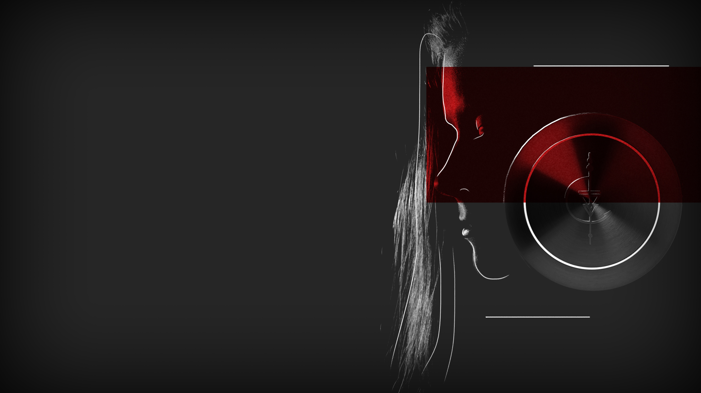

SPLITTED
SPLITTED

Hudson connects my phone to the tablet with an old cable he still has in his drawer.
«What do you think it’s going to be?» he asks me.
«I don’t know, probably something from my mother’s past?»
I’m not sure why I feel the urge to lie to him. I want to tell him about the function, and the riot, and everythng that came after it: I need him to tell me what is going on, and why I received an old tablet filled with files I am not familiar with.